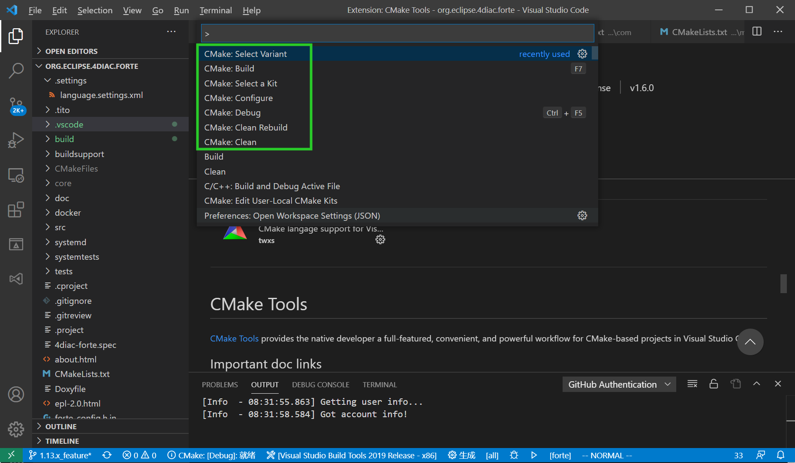

Compiling and Debugging 4diac FORTE with MS Visual Studio Code
The following describes how to compile 4diac FORTE with win32-architecture using Visual Studio Code.
In the installation tutorial (back) you find more details on building your own 4diac FORTE.
Additionally, visual studio code is described there.
Building a MS Visual Studio Code Project for 4diac FORTE with CMake
In the installation tutorial, the steps on building a project with CMake are described in detail.
To use Visual Studio Code with CMake, you need to specify the options (All the options are shown in CMake-GUI when you choose source folder FORTE_FOLDER_ROOT, refer to Build a project with CMake.) for CMake in settings.json for the project in Visual Studio Code.The correct architecture is Win32. Below is an example of settings.json for forte with OPC DA compiled.
{
"cmake.configureOnOpen": false,
"cmake.configureSettings": {
"FORTE_ARCHITECTURE:STRING": "Win32",
//Enable Forte Com FBDK
"FORTE_COM_FBDK:BOOL": "ON",
//Enable Forte Com Ethernet
"FORTE_COM_ETH:BOOL": "ON",
//Enable Forte local communication
"FORTE_COM_LOCAL:BOOL": "ON",
//IEC61131-3 Function blocks
"FORTE_MODULE_IEC61131:BOOL": "ON",
"FORTE_MODULE_UTILS:BOOL": "ON",
"FORTE_MODULE_CONVERT:BOOL": "ON",
//Loglevel to use
"FORTE_LOGLEVEL:STRING": "LOGDEBUG",
"CMAKE_BUILD_TYPE:STRING": "debug",
"FORTE_COM_OPC":"ON",
"FORTE_COM_OPC_LIB_ROOT": "D:/4diac/OPC_DA_ClientSDK_0.4/" ,
"FORTE_COM_OPC_BOOST_ROOT": "D:/4diac/boost_1_70_0/boost_1_70_0/",
}
}
Compile and debug 4diac FORTE with Visual Studio Code
- Install compiler. For example, msbuild tools if you want to compile OPC DA, install the components according to ms buildtools. Or if you prefer mingw-w64, follow mingw-w64.
- Install "CMake tools" plugin in visual studio code.
- Open command palette(ctrl + shift + p), compile or debug in below command:
cmake:select a kit; //choose MINGW64, msbuildtools or gcc
cmake:select variant; //debug or release
cmake:configure;
cmake:build //compile
cmake:debug

- When you choose debug or release, do make the cmake option "CMAKE_BUILD_TYPE" in settings.json align with the "cmake:select variant".
Where to go from here?
If you want to build a 4diac FORTE, here is a quick link back:
Install Eclipse 4diac
After you installed all required tools, it's time to start using them. Take a look at the following page:
Step by step tutorial
If you want to go back to the Start Here page, we leave you here a fast access
Start Here page
Or Go to top